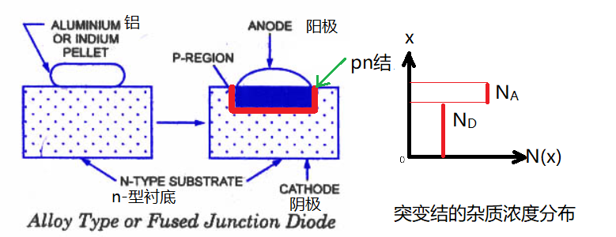
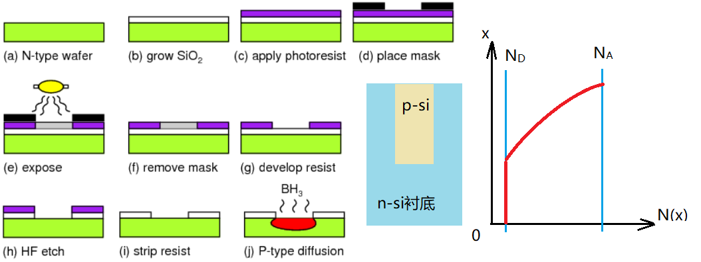
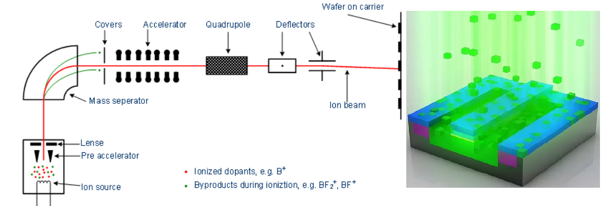
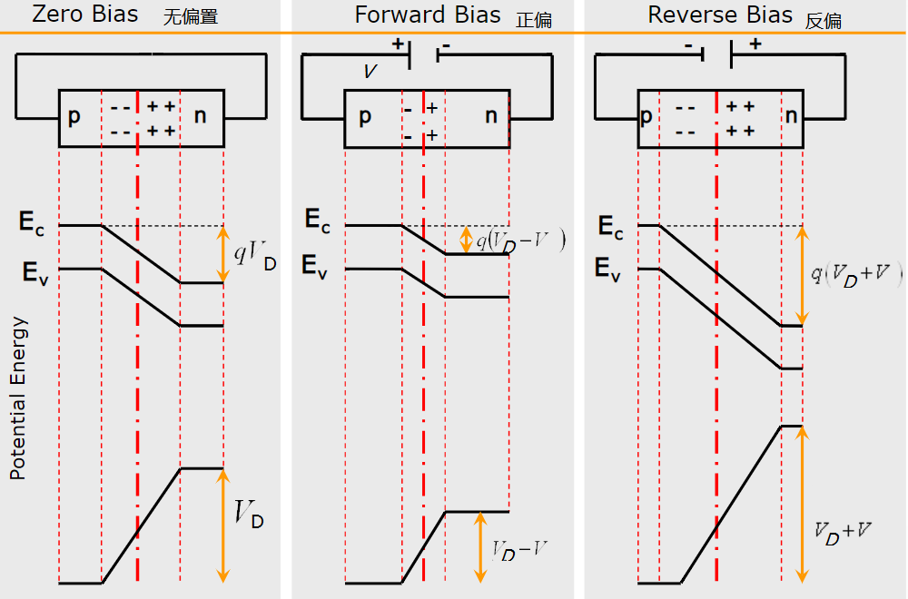
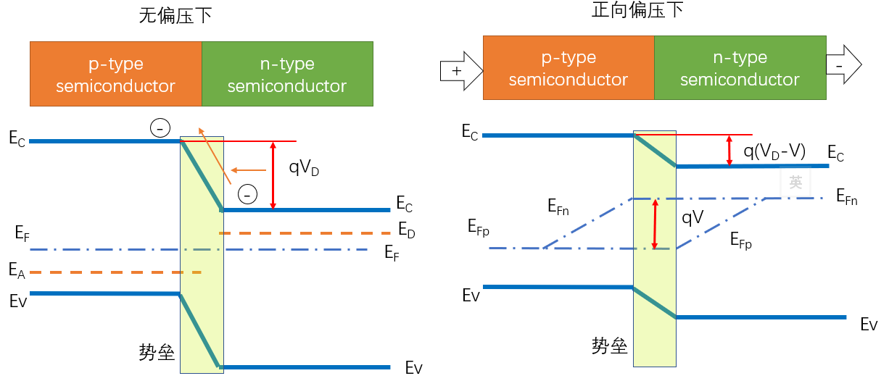
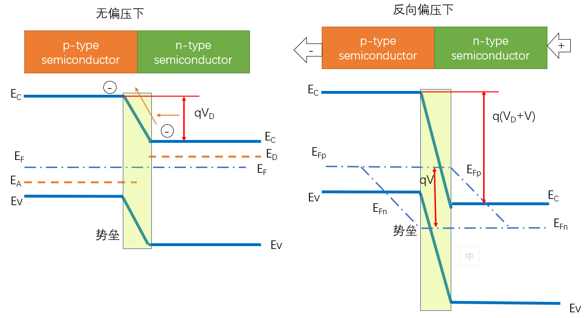
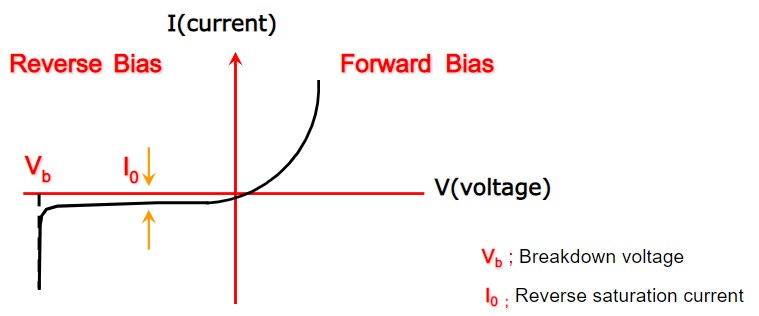
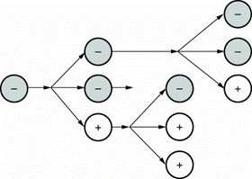

pn结是半导体器件的核心，单一的pn结就是一个二极管，大部分的半导体器件都是以pn结为主，下面先介绍几种pn结的制备工艺。
【1】合金法
如图，把一小粒铝放在n-型硅的衬底上，局部加热使铝底部和硅接触部分融化，Al和Si互相融合，降低温度，熔融体开始凝固，即可在结合面形成p-型硅薄层，这是合金结的形成工艺。注意，其杂质浓度的分布如右图所示。这种结称为
注意，在这个例子中，衬底的杂质浓度比较小，铝掺杂后形成的p-型硅的杂质浓度比较高，这称为
【2】扩散法
如图，把需要掺杂的p型杂质气化，并通过
对于
【3】离子注入法
也可以用离子注入的方式来掺入杂质，这是最精确的，可以控制是缓变结或突变结。
由于$qV_D=E_{F_n}-E_{F_p}$，且平衡后，p区导带电子浓度$n_{p0}=n_i\exp\left(\frac{E_{F_p}-E_i}{k_0T}\right)$，n区导带电子浓度$n_{n0}=n_i\exp\left(\frac{E_{F_n}-E_i}{k_0T}\right)$，因为$n_{n0}\approx N_D$, $n_{p0}\approx \frac{n_i^2}{N_A}$，可以得到: $V_D=\frac{k_0T}{q}\mathrm{ln}\left(\frac{N_DN_A}{n_i^2}\right)$, 设300K时，$N_A=10^{17}/cm^3$, $N_D=10^{15}/cm^3$，可得硅的$V_D=0.7V$, 锗的$V_D=0.32V$。
设平衡时n区的电子、空穴浓度分别是$n_{n0}, p_{n0}$，p区的电子、空穴浓度分别是$n_{p0}, p_{p0}$，可以得到势垒区内电子和空穴的浓度分布是： $n(x)=n_{n0}\exp\left[\displaystyle\frac{qV(x)-qV_D}{k_0T}\right]$ $p(x)=p_{p0}\exp\left[\displaystyle\frac{-qV(x)}{k_0T}\right]$
利用上面两个式子，可以算出势垒区的载流子分布，比如，设势垒区最左边（p区）的边界处电势为0，p区的杂质浓度为$N_A$，$n$区的杂质浓度为$N_D$，在从势垒区右边界往左（←），内电场电势减少$0.1V$(也就是电子势能提高$0.1eV$)的地方，其电子浓度为：$n(x)=n_{n0}\exp\left[\frac{qV(x)-qV_D}{k_0T}\right]\approx N_D\exp\left[\frac{-0.1}{0.026}\right]=\frac{N_D}{50}$
设势垒高度为$0.7eV$，则从右升高$0.1eV$的地方，就是从左边界减少$0.6eV$的地方，即$qV(x)=0.6eV$, 则此时该处的空穴浓度为：$p(x)=p_{p0}\exp\left[\frac{-qV(x)}{k_0T}\right]$， 即$p(x)\approx N_A\exp\left[\frac{-0.6}{0.026}\right]\approx \frac{N_A}{10^{10}}$
可见，在势垒区的载流子浓度非常少，可以视为0，称为耗尽层。
当pn结在热平衡状态下，存在具有一定宽度和势垒高度的势垒区，其中相应的出现了内建电场
平衡状态下的每种载流子的扩散电流和漂移电流互相抵消，最后的结果是：
当通过pn结两端施加偏压电场时，这个平衡被打破，将会有非平衡载流子产生。
【1】外加电压下，pn结势垒的变化和载流子的运动
【2.1】外加正向电压下，pn结能带的变化
【2.2】外加反向电压下，pn结能带的变化
理想pn结要求满足以下条件：
设p区半导体的杂质浓度为$N_A$，n区半导体的杂质浓度为$N_D$, p区平衡时的电子和空穴的浓度分别为$n_{p0}, p_{p0}$，n区平衡时的电子和空穴的浓度分别为$n_{n0}, p_{n0}$, n区的空穴扩散系数$D_p$, 空穴扩散复合寿命$\tau_p$, 空穴扩散长度$L_p=\sqrt{D_p\tau_p}$，p区的电子扩散系数$D_n$，电子扩散复合寿命$\tau_n$, 电子扩散长度$L_n=\sqrt{D_n\tau_n}$，外接电压$V$
则理想pn结中的电流电压方程（肖克利方程）为：$J=J_s\left[\exp\left(\displaystyle\frac{qV}{k_0T}\right)-1\right]$, 其中$J_s=\displaystyle\frac{qD_nn_{p0}}{L_n}+\displaystyle\frac{qD_pp_{n0}}{L_p}$
由于常温下($T=300K$), $\frac{k_0T}{q}=0.026V$, 正向偏压下，$V\approx 0.3 \sim 0.7V$，所以$\exp\left(\frac{qV}{k_0T}\right) \gg 1$, 所以$J=J_s\left[\exp\left(\displaystyle\frac{qV}{k_0T}\right)-1\right]\approx J_s\exp\left(\displaystyle\frac{qV}{k_0T}\right) $
反向偏压下，$V \lt 0 $，由于$|V| \gg \frac{k_0T}{q} $, 所以$\exp\left(\frac{qV}{k_0T}\right) \to 0$, 于是$J=-J_s=-\displaystyle\frac{qD_nn_{p0}}{L_n}+\displaystyle\frac{qD_pp_{n0}}{L_p}$为常量。可见，pn结具有单向导电性，也称整流效应。另外，正向电流密度随温度上升而增加。
【1】反向电压时，由于pn结总的电压增加，pn结的温度上升，导致原来的耗尽层又增加额外的本征激发的载流子，并在外电场下形成额外的反向电流，这是势垒区的产生电流。
【2】正向电压时，理想pn结的正向净电流是扩散电流，在pn结中，同时有电子扩散和空穴扩散，并且假定二者没有复合，实际上会有部分电子和空穴在势垒区复合，形成势垒区的复合电流，在小正向偏压时比较明显，形成正向的a段，当正向电压足够大时，复合电流不明显，这是b段。
【3】正向偏压比较大时，会使得注入的非平衡载流子比较多，形成大注入。以$p^+n$结为例，由于p区的空穴浓度比较大，有大量的空穴扩散到n区，并在势垒区右边界堆积，由于电中性，导致势垒区右边界的导带的电子也产生堆积，从而减弱了电子扩散电流，这是c段，当电流继续增加，会产生漏电流，从而形成d段。
【4】在反向偏压比较大时，会产生击穿，参见后面介绍。
【1】势垒电容：如上图，当pn结加上正向偏压时，势垒区变窄，相当于电子和空穴中和势垒区的电离杂质，并存储在势垒中，当电压下降时，就会重新释放出这些载流子，这是势垒电容；
【2】扩散电容：如上图，对于单边突变结，大量的载流子会堆积在另一区的边界，并由于电中性导致另一种载流子也堆积，这样就会形成垂直方向的电荷堆积，形成扩散电容；
对于突变pn结，设其接触面积为$A$,其内电场电势差为$V_D$，外加电压为$V$，$\varepsilon_r$为半导体的相对介电常数，p区杂质浓度$N_A$, n区杂质浓度$N_D$, 可以算出，势垒的宽度$X_D=X_p+X_n$，p区宽度：$X_p=\sqrt{\frac{2\varepsilon_r \varepsilon_0 V_D}{qN_A}}$, n区宽度：$X_n=\sqrt{\frac{2\varepsilon_r \varepsilon_0 V_D}{qN_D}}$
突变结的(反向偏压时的)势垒电容为：$C_T=\frac{A\varepsilon_r\varepsilon_0}{X_D}$，正向偏压时的势垒电容：$C_T=4A\sqrt{\frac{\varepsilon_r\varepsilon_0 q N_A N_D}{2(N_A+N_D)V_D}}$
突变结的势垒电容和结面积$A$成正比。对于单边突变结，如$p^+n$结，$N_A \gg N_D$, 则$C_T\approx A\sqrt{\frac{\varepsilon_r\varepsilon_0 q N_D}{2(V_D-V)}}$，可见电容和轻掺杂的杂质浓度的开方成正比；
突变结的势垒电容和$\sqrt{V_D-V}$成反比，说明反向电压越大，势垒电容越小，可利用这一点制作变容器件；
线性缓变结的势垒宽度：$X_D=\sqrt[3]{\displaystyle\frac{12\varepsilon_r\varepsilon_0(V_D-V)}{q\alpha_j}}$，其中，$\alpha_j$是杂质的浓度梯度，注意，缓变结左右两边的宽度是相等的，所以$X_n=X_p=\displaystyle\frac{X_D}{2}$
同样得到线性缓变结电容为：$C_T=\displaystyle\frac{\varepsilon_r\varepsilon_0A}{X_D}$
由此可见，减少结面积$A$，或者降低杂质浓度梯度$\alpha_j$，或者加大反向电压，都可以减少势垒电容；
设pn结的面积为$A$，则当正向偏压时，pn结中的扩散电容值为：$C_D=\left[Aq^2\displaystyle\frac{(n_{p0}L_n+p_{n0}L_p)}{k_0T}\right]\exp\left(\displaystyle\frac{qV}{k_0T}\right)$
对于$p^+n$结：$C_D\approx\left[Aq^2\displaystyle\frac{p_{n0}L_p}{k_0T}\right]\exp\left(\displaystyle\frac{qV}{k_0T}\right)$
上式只用于低频的情况，扩散电容在频率增高时会越来越小，一般认为高频时相当于短路；
从上式可见，随着外电压增加，扩散电容成指数增加，所以，在大的正向偏压时，扩散电容起到主要作用。
理想的pn结，反向偏压时几乎可以认为是没有电流的（或者维持很小的反向电流），但实际上，当反向电压大到一定时，就会产生击穿，即反向电流迅速增大
击穿时的电压，称为击穿电压（breakdown voltage）
如果反向电压比较大，并且势垒宽度比较宽，载流子在势垒区会被加速得到很大的动能，当它与晶格原子碰撞时，会将价带电子激发到导带，这样1个载流子就能得到3个载流子，大量的载流子在反向偏压下形成反向电流，产生击穿。
当pn结反向偏压，结区热量迅速增加，如果热量不能很好的散发出去，会导致局部结温上升，从而使得本征载流子增加，并在反偏电压下成为反向电流。这种由于热不稳定引起的击穿，称为热电击穿，对于锗的pn结，比较常见。
若反偏电压加大势垒高度，使得n区的导带底低于p区的价带顶部，则p区的价带电子有概率之间洞穿到n区的导带，形成反向击穿，其概率和反向偏压（越大概率越高）和势垒区的宽度($X_D$)（越小概率越高）有关，由于$X_D$和杂质浓度开方成反比，所以为了实现一定概率的隧道击穿，必须要重掺杂。
条件：对于重掺杂的硅、锗pn结，当击穿电压$V_{br} \lt 4\frac{E_g}{q}$时，一般为隧道击穿；当击穿电压$V_{br} \gt 6\frac{E_g}{q}$时，一般为雪崩击穿；处于这两个电压时，两种击穿都存在。
1. 画图简要说明pn结势垒
2. 通过能带理论简要说明pn结的电流电压特性
3. 画图说明pn结击穿的几种类型
1. 画图简要说明pn结势垒
解：如图，p型半导体和n型半导体接触，两边的载流子互相向对方扩散，形成空间电荷区，形成内电场，内电场使能带弯曲，形成势垒。
2. 通过能带理论简要说明pn结的电流电压特性
解：如图，在正偏电压下，势垒高度降低，使得内电场对多子扩散的阻挡减弱，于是正向电流增加；在反偏电压下，势垒高度增加，使得内电场对多子扩散的阻挡增强，少子漂移增强，但是少子太少使得反向电流有但是很少，这就是其正向导通，反向截止的电流电压特性。
3. 画图说明pn结击穿的几种类型
解：如图，击穿主要是雪崩击穿和齐纳击穿（隧道击穿）。雪崩击穿主要是由于载流子在反向电场下加速撞击晶格原子，使共价键上的电子激发到导带，产生雪崩式的载流子增加，从而产生击穿。
隧道击穿，是因为能带弯曲导致n区的导带底部已经低于p区价带顶部，同时由于势垒宽度非常窄，使得p区的价带电子能够通过势垒区的隧道直接进入n区的导带，从而形成击穿。